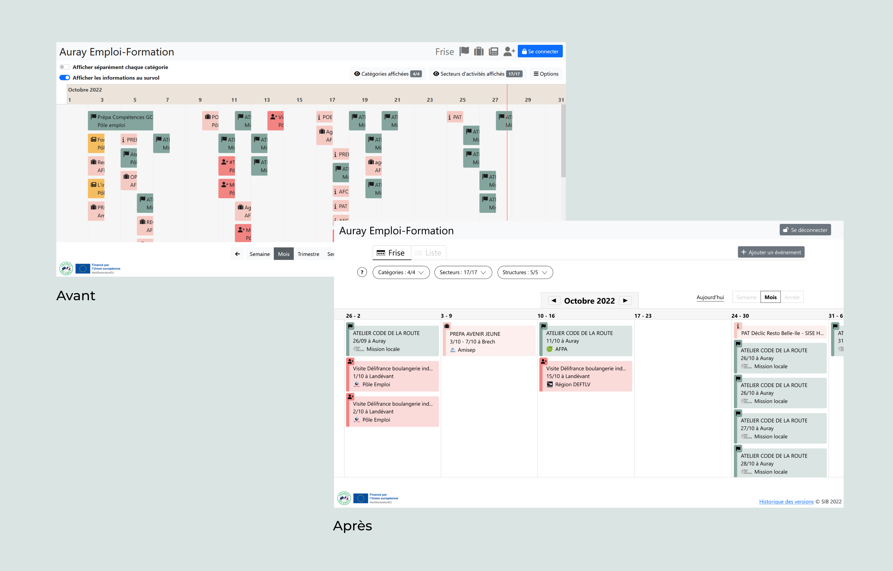
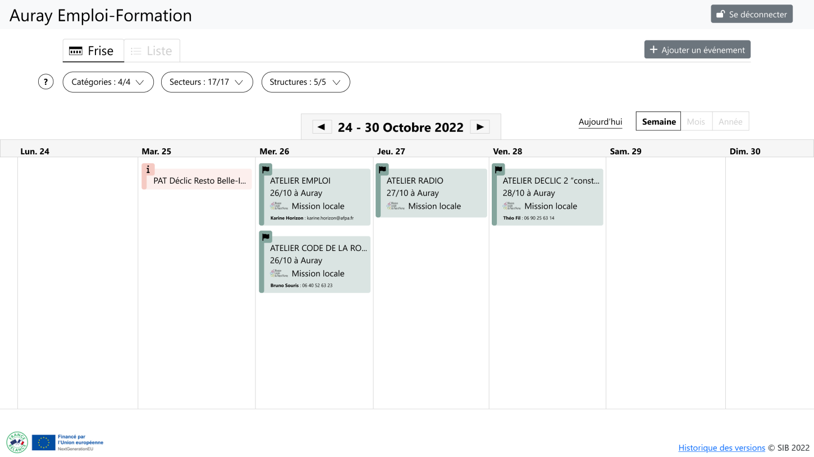
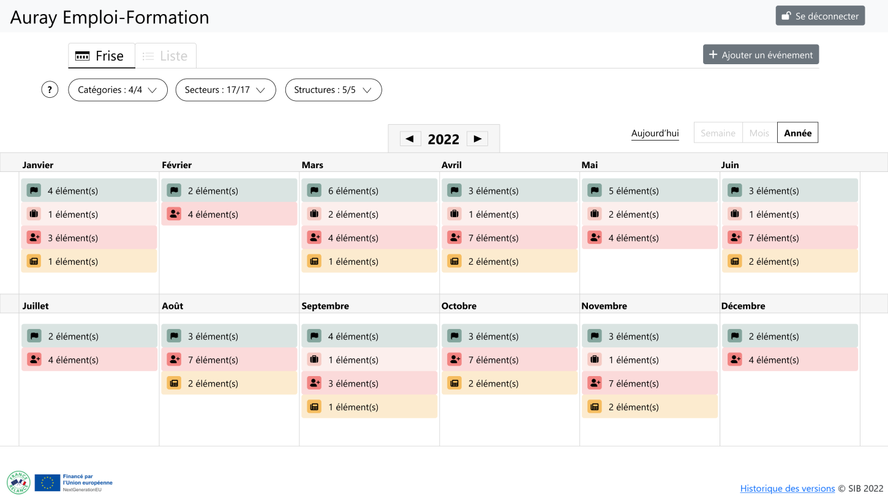
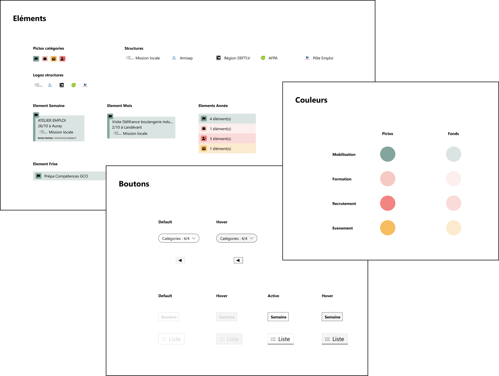
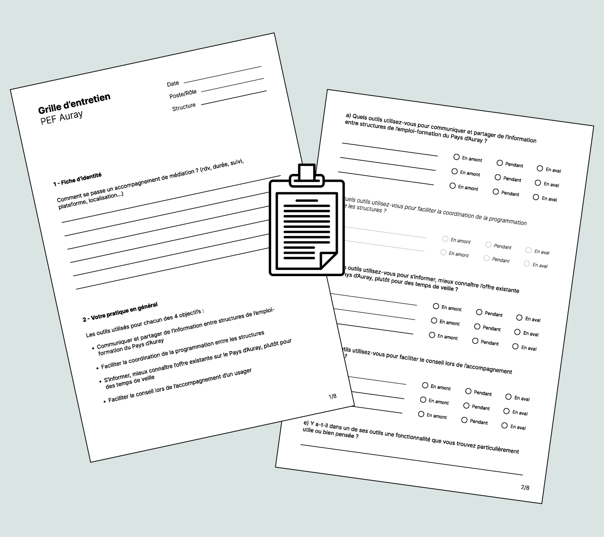
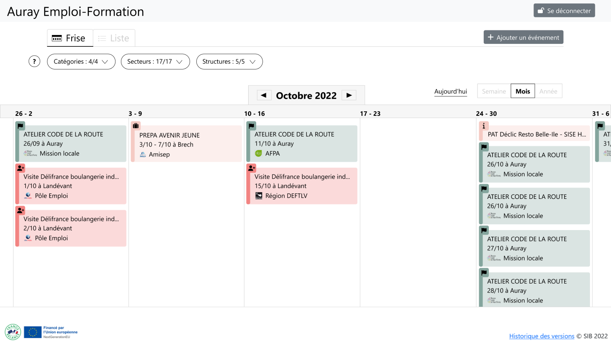
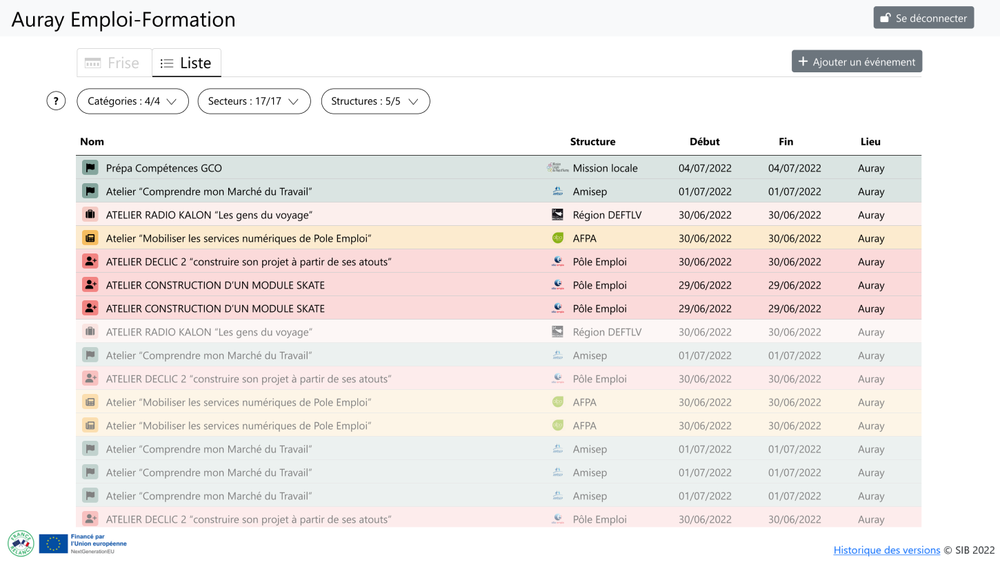
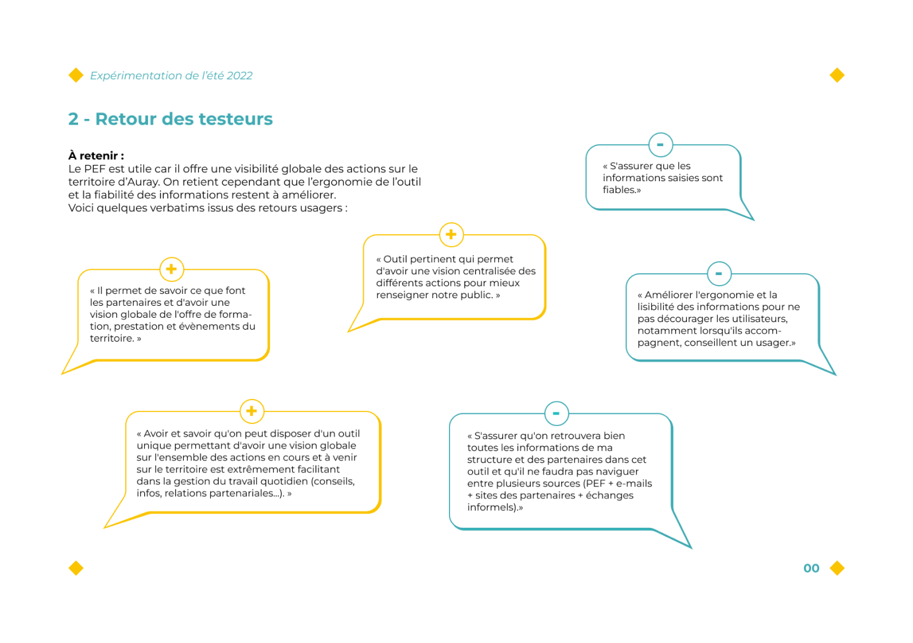
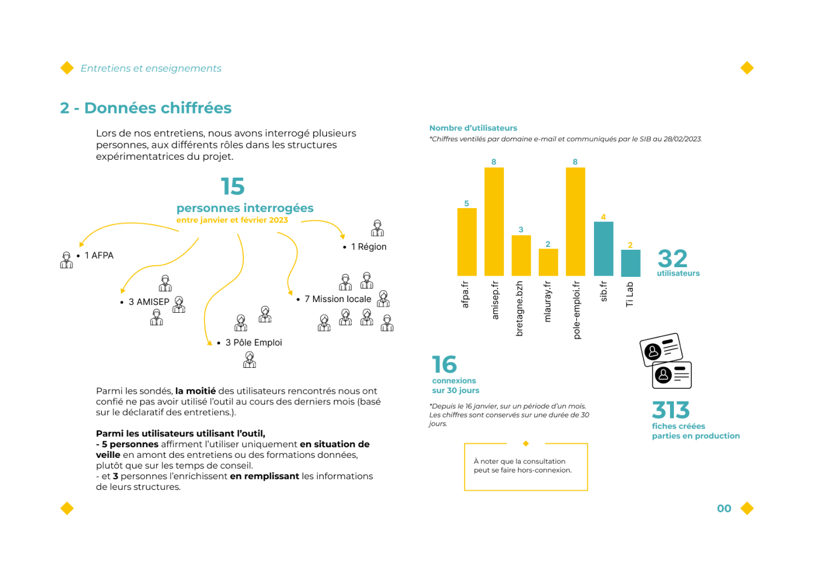
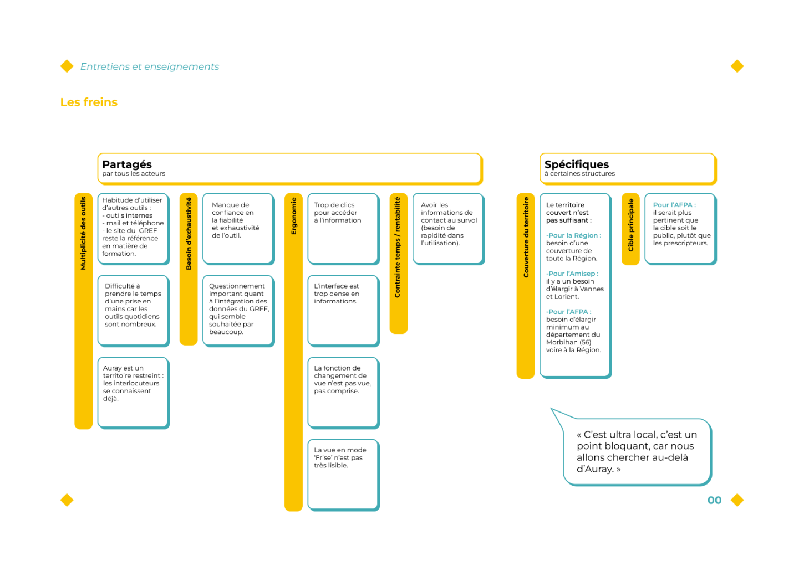

PEF Auray
Interface - Outil de partage d'infos
Outil numérique de partage d’informations entre les acteurs locaux de l’Emploi-Formation du Pays d’Auray.
Figma
Outil en ligne à destination des professionnels de l’emploi-formation du Pays d'Auray (Mission locale, Pôle Emploi, Amisep, Afpa et Région Bretagne), qui se présente sous la forme d’un planning, pour donner de la visibilité sur différents événements. Cet outil a pour but de faciliter la coordination de la programmation entre ces structures et également d’améliorer l’offre et le conseil aux usagers.
Mon rôle dans le projet : amélioration de l'ergonomie du prototype de l'outil, conduite d'entretiens avec les testeurs dans les structures, rédaction et mise en page du livrable de fin de projet.









